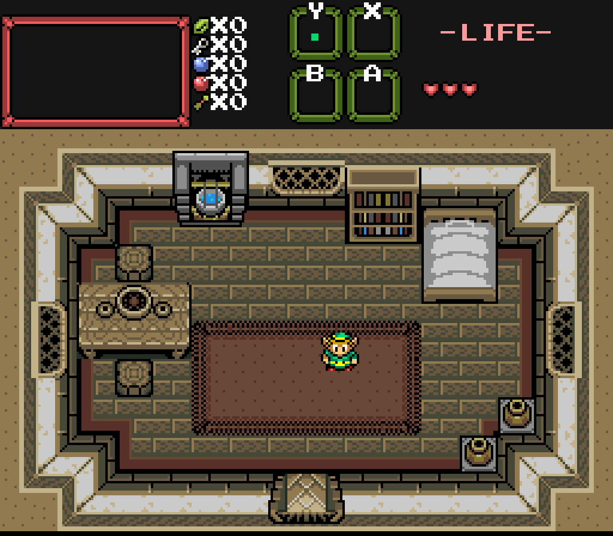
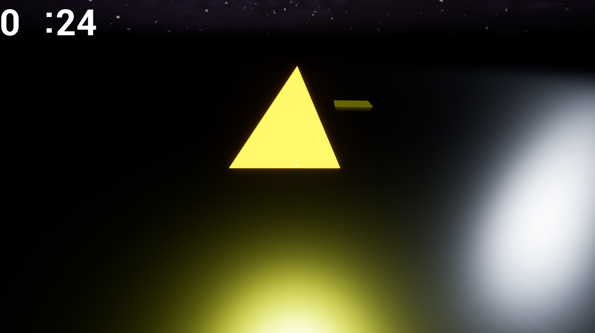
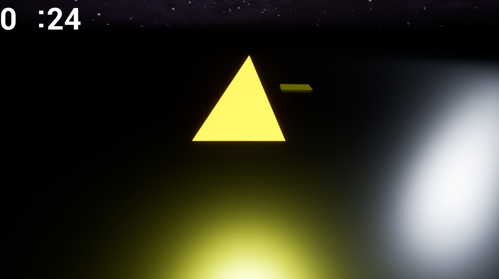
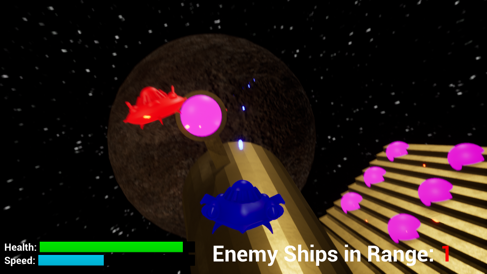
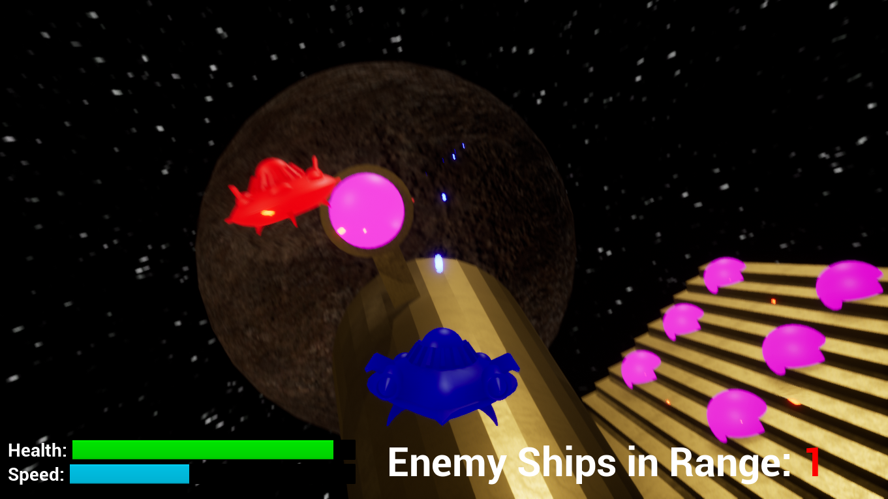

Discovery is a complete adventure made in a Legend of Zelda quest editor called ZQuest.
I had high ambitions for this project, as I wanted to expand out from creating a single dungeon and
create a full Zelda adventure on the same scale as the original Legend of Zelda. This was only my second
project on the ZQuest engine too, so I still had a lot to learn about the engine as I worked on this.
Before I started developing this quest, I drew a paper map that showed the overall layout of the
world, showed the intended locations of multiple different entities, paths, and dungeons, and showed the critical
path that the player should follow to beat it. I received a lot of feedback on this design and the layout
in the final project is a little different from the paper map to better fit the gameplay.
The quest contains a narrative that serves as the backstory and the primary motivator for
the quest. The dialogue from NPCs also give the player hints about where to go or what items they need.
Progression in this quest is tied to the items, as many areas can only be accessed with specific items.
Several items that can be found in the quest are also optional and they merely serve to help the player
beat the game more easily. Most of these optional items can be found in areas that the player doesn't have
access to when they pass by them for the first time. This rewards exploration and paying attention to the
environment.
I have a playlist of videos showcasing my progress with the project.
In order to play this quest, you need to download ZQuest and the .qst file for it. Go to
this link and download ZQuest version 2.55 Alpha 120
(That's the version I developed it for). In the files, there should be a Quests folder. Download the .qst
file here and put it in that folder. Then, open the
zplayer executable, create a profile, and choose the quest. Now you can play it!
Game Design:
1. Prototype and complete original games for multiple platforms following the full game production pipeline.
Discovery


2. Create and implement game elements, systems and play mechanics using industry-standard tools, techniques and production methods, including art or scripting/programming applications.
World View


I worked in a group of 4 to create
a unique arcade-style twin stick shooter. Two of us were programmers. I worked on the gameplay itself
and the teammate worked on the menus. Since I was back in my comfort zone with Unity again, I wanted
to incorporate some features that I was unfamiliar with, such as camera manipulation outside of
simple panning and controller support. The controller support in particular was the biggest challenge
for me to overcome for this project because I had to program the player controls around it.
Click this link to download and play it.
3. Demonstrate effective game design practices and techniques within the project scope and context, such as genre, style, platform and audience.
Wizzrobe Wonders


Wizzrobe Wonders is a small adventure made in a Legend of Zelda quest editor called ZQuest.
Since The Legend of Zelda was particularly famous for its puzzles, I wanted to focus on that
for this project. This was my first project with this game engine and I had 5 weeks to make it, so I
wanted to start small with a side quest and a dungeon.
Before I started developing this quest, I drew a paper map that showed the overall layout of the
dungeon, showed the intended locations of every item, door and enemy, and showed the critical path that the
player should follow to beat it. I received a lot of feedback on this design and the layout in the final
project is a little different from the paper map to better fit the gameplay.
I have a playlist of videos showcasing my progress with the project.
In order to play this quest, you need to download ZQuest and the .qst file for it. Go to
this link and download ZQuest version 2.55 Alpha 120
(That's the version I developed it for). In the files, there should be a Quests folder. Download the .qst
file here and put it in that folder. Then, open the
zplayer executable, create a profile, and choose the quest. Now you can play it!
4. Demonstrate the ability to evaluate game designs for a variety of gameplay mechanics, game applications and game genres.
In the Advanced Level Design class, we had weekly discussions about level (and game) design in different genres.
In these discussions, we discussed our opinion of the genre, what we feel defines a "good game" in the genre, and
some good and bad examples of the genre.
This is the post that I made about the stealth genre:
All stealth games have a simple objective: accomplish the goal while staying out of sight. The games themselves
will add nuance to this with the level design and the behavior of the AI. These kinds of games require you to plan
out your course of action on the fly as you navigate through the levels and avoid getting spotted. I'm not that good
at these kinds of games, but I respect these games for their interesting and unique level design and mechanics.
I think a good stealth game has to be challenging and make you use your brain. Stealth encounters don't want you
to blitz through the level like it's a hack and slash, so the mechanics and level design need to prevent that. At the
same time, the game needs to give you a certain amount of tools that can help you complete the level while making the
game fun.
I know Metal Gear Solid is the creme de la creme of stealth games, but I don't have any personal experience with
those games. So instead, I'll talk about the Batman Arkham games, as I think the stealth levels in those games are
phenomenal. Every stealth level follows the same pattern in terms of layout: Batman starts off out of sight in a big
room, and all of the enemies are standing or slowly walking around with guns. Batman doesn't have any sort of
resistance to guns since he's only human, so getting spotted and shot at will put Batman in serious danger. This
incentivizes the player to avoid getting spotted. In order to take down the enemies, the player has access to a
wide range of tools and gadgets. This gives the player a lot of freedom in how they want to take down the enemies.
At the same time, these tools have to be used wisely because most of them won't outright take down enemies for you,
only stunning them long enough for you to take them down yourself. Levels may also provide a number of routes for
the player to use, such as through vents and grates. Players can use these paths to perform surprise attacks or make
quick getaways, but if an enemy spots Batman using one of these hidden paths, they will stay aware of them for the
rest of the encounter, essentially blocking them off as stealth routes. All of these factors combine to make stealth
levels in the Batman Arkham games intense, thrilling, and fun.
As much as I like the Insomniac Spider-Man games, I think the stealth segments in those games are kind of a joke
in comparison to the Batman Arkham games (I'm talking about Spider-Man stealth, not the MJ or Miles segments from the
first game). My main problem with them is that they are too easy. Spider-Man has ton of freedom of movement, which
makes it easy to stay out of the enemies' sights. Across both the first game and Miles Morales, Spider-Man has a ton
of tools that allow him to take down enemies from far away, making it basically pointless to sneak up behind them.
By far the most egregious aspect of the stealth in these games is that when you scan the environment, the game will
straight-up tell you if it's safe to take down an enemy. Now you don't have to be aware of your surroundings when
taking down an enemy, you can just take them down if the game tells you ‘yes’. All of these factors make stealth in
these Spider-Man games unsatisfying and boring. Also, unless stealth is required for a mission, stealth in these
games is completely pointless because you can fight the enemies normally by dodging bullets and throwing their guns
around. Why would I want to sneak around and slowly pick off enemies when I could use the more fun route and blitz
through them?
5. Effectively articulate game design elements and mechanics across disciplines utilizing written and verbal communication skills.
Light: Lite
 

Light: Lite is a 3D first-person puzzle game created for a 48-hour Game Jam.
A short Design Document was created for the project that also served as a checklist for implementing
different features into the game.
Click this link to download and play it.
6. Establish collaboration, mentorship and professional leadership skills by working with other disciplines to deliver highly polished and completed projects.
Knock-Out Arcade


Knock-Out Arcade is a 2D fighting game made in Game Maker Studio 2 with the Game Maker language.
This was a Production Studio project, meaning it was a student-run project pitched for other
students to work on in a class. Different students get onboarded across semesters, and I was onboarded
as a programmer during the project's second semester running.
During my time working on the project, I quickly established myself as a teammate that was
dedicated to make the project as good as possible with the time I had to work on it. I communicated
frequently with the project lead, the designers, and the other programmers to get a firm grasp of the
overall vision of the project and what needed to be done.
Even though I wasn't classified as a lead in the project, the other programmers often came to me
for help on their tasks and I helped them. Rather than doing the tasks for them, I taught them the best
ways for them to do their tasks and gave them a starting point to work off of whenever they got stuck.
Click this link to download and play it.


 
